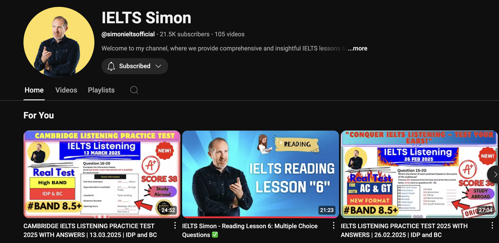
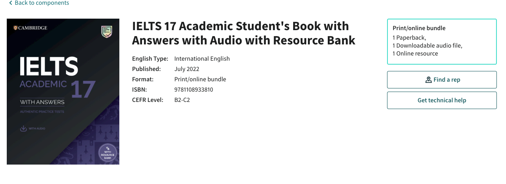

IELTS for Nurses: My Proven Band 8 Strategy to Pass on the First Try

If you’re a nurse dreaming of working in the UK or Malta, you already know that the IELTS Academic test is often the biggest hurdle between you and your dream job. It can feel intimidating, but it doesn’t have to be.
I’ve been there — and I want to show you how to prepare smart so you can pass confidently on your first try.
Why This Matters for Your Nursing Career
Whether you want to register with the UK’s Nursing and Midwifery Council (NMC) or Malta’s Council for Nurses and Midwives, meeting the IELTS requirements is not just a box to tick — it’s your key to working legally, confidently, and successfully abroad. It's about proving you have the communication skills to provide safe and effective patient care.
Know Your Target: Official IELTS Requirements
United Kingdom – Nursing and Midwifery Council (NMC)
To register, you need these minimum IELTS Academic scores:
| Section | Minimum Score |
|---|---|
| Listening | 7.0 |
| Reading | 7.0 |
| Speaking | 7.0 |
| Writing | 6.5 |
| Overall Band | 7.0 |
💡 Pro Tip: You can combine scores from two test sittings within 12 months. For example, if your Writing is 6.5 in the first test but you get 7.0 in other sections, you can retake the test and use the higher score from each sitting to meet the requirements.
Malta – Council for Nurses and Midwives
Malta requires an overall band score of 6.0. While this is lower than the UK’s, aiming higher will boost your confidence, improve job prospects, and increase your professional mobility within the EU.
My Proven 4-Step Strategy for a Band 8 Score
A quick but important note: You don’t need dozens of strategies or expensive courses. Since you already speak and understand English, mastering the test format and a few key techniques will get you there. Pick quality resources and stick to them consistently.
-
Step 1: Get Your Diagnostic with a Mock Test
Begin by taking one of the British Council’s free IELTS mock tests. This will give you a clear, honest picture of where you stand and which areas need the most focus.

-
Step 2: Learn from a Real Ex-Examiner
Follow IELTS Simon’s YouTube lessons daily. His practical, examiner-based advice is like having a teacher who knows exactly what you need to do to score high.
 -
Step 3: Practice with Authentic Past Papers
Use the Cambridge IELTS Academic Books — these are the official past papers with audio. I recommend working backwards from the newest edition (currently Book 17) to get the most up-to-date practice.
 -
Step 4: Use AI as Your 24/7 Personal Tutor
Generative AI tools like ChatGPT or Gemini are game-changers. Here's my secret for using them effectively:
My AI Prompting Method: Upload Simon's materials or paste links to his key YouTube videos and tell the AI: "Master these materials from IELTS Simon. Now, act as my personal IELTS tutor based on his methods. Mark my essays and give me feedback as Simon would."
This turns a general tool into a highly specialized and effective study partner.
Smart Study Habits for a First-Time Pass
- Use Official Resources First. You have more than enough high-quality practice material from the British Council and Cambridge. There’s no need to waste time or money on random, unofficial sources.
- Train Under Real Exam Conditions. Always time yourself strictly. This builds the mental stamina and confidence you'll need on test day.
- Tackle Your Weakest Section First. Don’t avoid it. Face it head-on in every study session until it becomes one of your strengths.
You Can and Will Pass IELTS on Your First Try
Many candidates take the IELTS multiple times. But with the right strategy and consistent effort, you don’t have to be one of them. Prepare smart, stay motivated, and you will move forward with your nursing career faster than you think.
💬 Need Personal IELTS Coaching?
At NursingAssist Pl, we specialize in 1-on-1 IELTS tutorials tailored for nurses — focusing on exactly what you need to meet UK NMC or Malta Nursing Council requirements.
📞 Contact us today to get your personalized, proof-tested study plan and ace the IELTS on your first try.